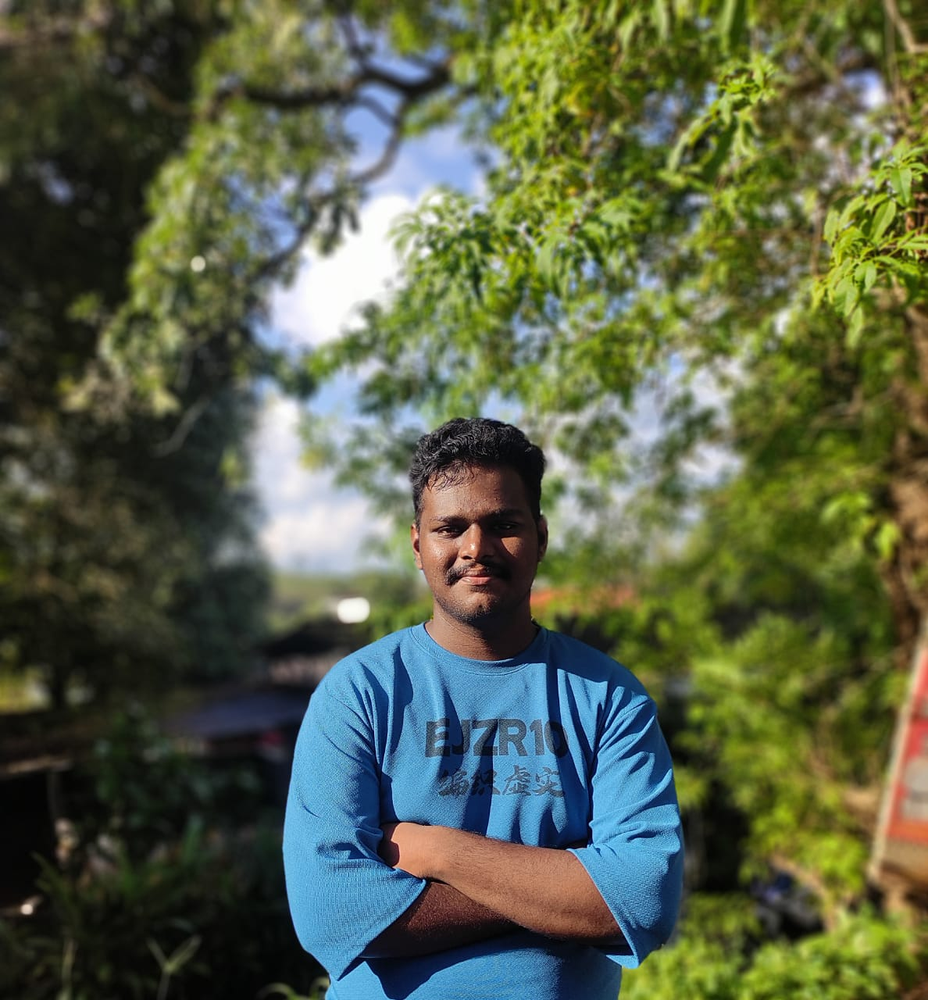

Languages
C
Python
Java
Dart
JavaScript

Hi, I'm Nithin Babu
Diploma Computer Engineer Graduate
I build practical real-world projects using web technologies, mobile app development, databases, APIs, and backend-connected systems.
I am Diploma Computer Engineering graduate who enjoys turning ideas into working applications. My interests include problem solving, clean user interfaces, database-backed apps, and learning how real software systems connect together.
I have worked with C, Python, Java, Dart, HTML, CSS, JavaScript, Flutter, Supabase, MySQL, PostgreSQL, Git, and GitHub.
Government Polytechnic College, Muttom
Diploma in Computer Engineering, CGPA 7.9/10.
S.T George Higher Secondary School, Vazhathope
Completed Plus Two with 80%.
S.T Thomas High School, Punnyar
Completed SSLC with 95%.
Developed a cross-platform healthcare application with secure authentication, role-based dashboards, barcode medicine lookup, location-based hospital and pharmacy discovery, and pharmacy ordering features.
Built a responsive tourism website with district-wise navigation, destination details, images, videos, and a user-friendly interface for exploring places in Kerala.